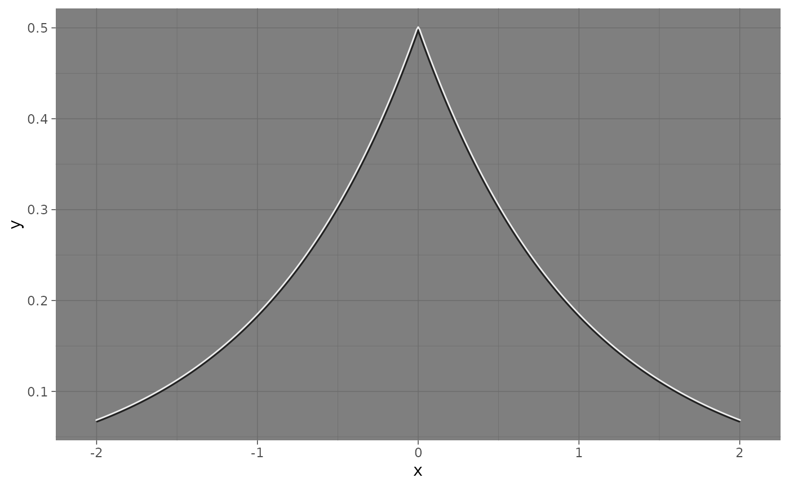
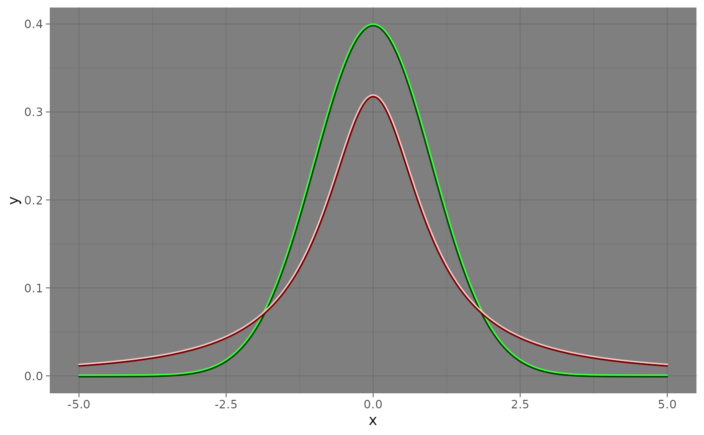

Draws a function (e.g., density or mathematical curve) using perceptually offset dual-stroke curved line segments.
Arguments
- fun
A function to evaluate (e.g.,
dnorm,dt).- xlim
Range of x-values to evaluate over (numeric vector of length 2).
- n
Number of segments to compute (default: 201).
- curvature, angle, ncp
Passed to underlying
geom_curve_dualsegments.- colour1, colour2
Fixed top/bottom stroke colours. If only colour1 given, colour2 is derived for contrast. (Aliases color1/color2 also accepted.)
- base_color
Optional base color to derive a contrast pair (overrides colour1/colour2 if supplied).
- contrast, method_contrast
Passed to adjust_contrast_pair() when deriving colors.
- linewidth
Stroke width for the top line.
- args
List of arguments passed to
fun(for example, list(df = 1) fordt).- smooth
Use smooth dual-stroke curves (
geom_path) instead of segmented curves (geom_curve_dual). Default is TRUE.- color1, color2
U.S.-spelling aliases for
colour1/colour2. Identical in effect; prefercolour1/colour2in code examples.- alpha
Overall opacity for both strokes (0–1).
- ...
Additional arguments passed to
geom_curve_dual().
Examples
library(ggplot2)
base <- ggplot() + xlim(-2.05,2.05)
base +
geom_curve_dual_function(
fun = function(x) 0.5 * exp(-abs(x)),
xlim = c(-2, 2),
color1 = "#EEEEEE",
color2 = "#222222",
linewidth = 1,
smooth = TRUE
) +
theme_dark()

ggplot() +
geom_curve_dual_function(
fun = dnorm,
xlim = c(-5, 5),
base_color = "green",
linewidth = 1,
smooth = TRUE
) +
geom_curve_dual_function(
fun = dt,
args = list(df = 1),
xlim = c(-5, 5),
base_color = "brown",
linewidth = 1,
smooth = TRUE
) +
theme_dark()
